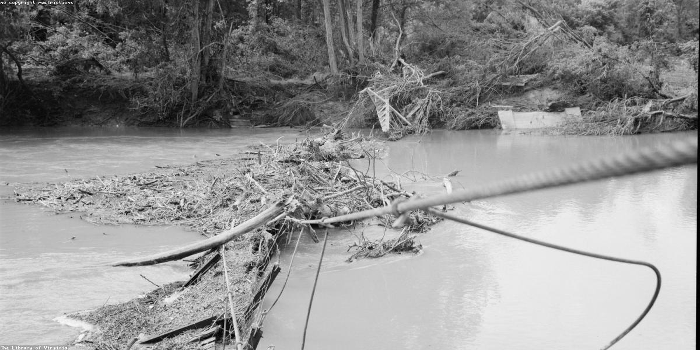

Human Consequences

Climate change is affecting our health, safety, and economy. The impacts are being felt globally, with some of the most vulnerable populations being hardest hit.
- Public Health: Rising temperatures lead to more heat-related illnesses and can spread diseases like malaria and dengue.
- Food Security: Changing rainfall patterns and extreme weather events are disrupting agriculture and food production.
- Economic Loss: Hurricanes, droughts, and floods cause significant damage to infrastructure and property.
- Climate Migration: Rising sea levels and extreme weather are forcing people to migrate and seek refuge in other areas.
Building Resilient Communities
Building resilient communities and infrastructure can help mitigate the impacts of climate change and protect our health, safety, and economy.